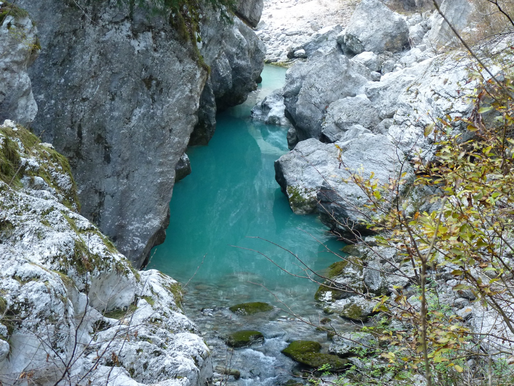
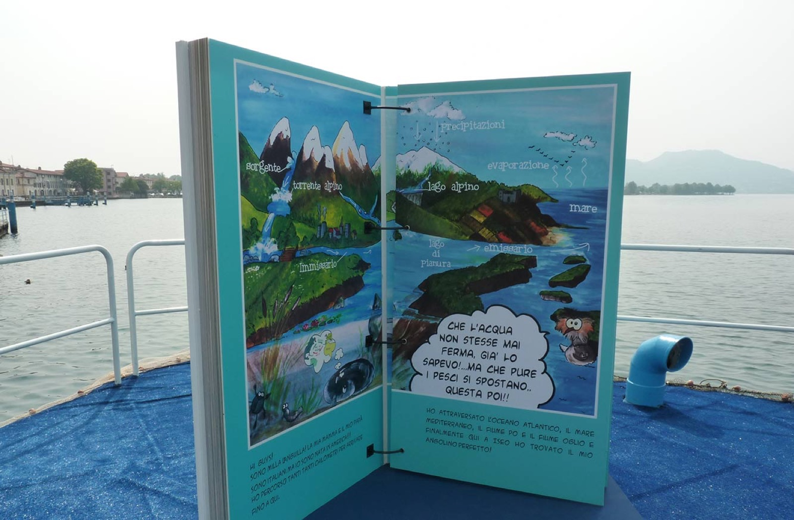

Le nostre attività
Sei ambiti, un solo filo conduttore.
L'esperienza del nostro team e il suo assetto multidisciplinare, insieme all'affiatamento di tutto il gruppo di lavoro, sono la migliore garanzia di competenza e professionalità.

01
Ittiologia e gestione della fauna ittica
Il mestiere da cui siamo partiti: conoscere i pesci per proteggerli e gestirli.
- Carte ittiche e piani ittici
- Conservazione delle specie
- Incubatoi ittici e acquacoltura
- Pesca sportiva e professionale

02
Monitoraggio e analisi ambientale
Dati raccolti sul campo, letti con rigore statistico, per capire lo stato di fiumi e laghi.
- Biomonitoraggio e limnologia
- Analisi statistica
- Batimetria
- Inquinamento delle acque, salute umana

03
Riqualificazione fluviale e lacustre
Interventi che restituiscono spazio e funzioni ecologiche all'acqua, anche con BLU Progetti.
- Ripristino della continuità fluviale
- Riqualificazione ecologica di rive e ambienti lacustri
- Rimboschimento e fitodepurazione
- Percorsi ciclopedonali e greenway

04
Passaggi per pesci e idroelettrico
Dove l'acqua incontra una diga o una traversa, i pesci devono poter passare.
- Progettazione dei passaggi per pesci
- Monitoraggio delle migrazioni ittiche
- Deflusso minimo vitale (DMV)
- Svasi e valutazioni di impatto

05
Programmi LIFE e ricerca europea
Progetti cofinanziati dall'Unione europea per specie e habitat. Il più recente: LIFEEL, per l'anguilla europea.
- Programma LIFE
- Cambiamenti climatici
- Reti ecologiche
- Ricerca: ProSpIttiCo, ECO4TICINO

06
Didattica e divulgazione ambientale
Raccontare l'acqua a chi la vive: scuole, cittadini, pescatori.
- Didattica ambientale
- Allestimenti e libri illustrati
- Eventi e incontri sul territorio